측량및지형공간정보산업기사 (2009-08-30 기출문제)
1과목: 응용측량
1. 20m에 대하여 2cm 늘어난 스틸테이프로 삼각형인 토지의 면적을 삼사법으로 구한 값이 50m2이었을 때, 정확한 면적은?
- 49.9m2
- 49.99m2
- 50.01m2
- 50.1m2
(정답률: 알수없음)

2. 다음 그림과 같은 지역을 측량한 결과 전체 토공량은 얼마인가?>
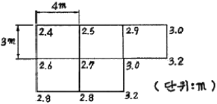
- 156m3
- 168m3
- 178m3
- 190m3
(정답률: 알수없음)
3. 원곡선 설치를 위한 노선측량의 순서로 가장 적합한 것은?
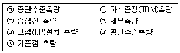
- ㉦-㉠-㉣-㉡-㉢-㉤-㉥
- ㉦-㉤-㉢-㉡-㉠-㉥-㉣
- ㉦-㉤-㉡-㉢-㉣-㉠-㉥
- ㉦-㉤-㉢-㉥-㉠-㉣-㉡
(정답률: 알수없음)
4. 도면에서 면적을 측정하니 1450m2이었다. 이 도면이 가로, 시로 모두 1%씩 줄어 있었다면 실제 면적은 약 얼마인가?
- 1445m2
- 1465m2
- 1480m2
- 1495m2
(정답률: 알수없음)
5. 반지름 286.45m, 교각 76“ 24”28인 단곡선의 길이(C.L)는 얼마인가?
- 379.00mm
- 380.00mm
- 381.00mm
- 382.00mm
(정답률: 알수없음)
6. 노선의 곡률반지름=100m, 곡선장 = 16m일 때에 클로소이드의 매개변수 A의 값은?
- 160m
- 160m
- 25m
- 40m
(정답률: 알수없음)
7. 그림에 있어서 댐 저수면의 높이를 110로 할 경우 댐의 저수량은 얼마인가? (단, 80m 등고선 내의 면적 100m2, 90m 등고선 내의 면적 1000m2, 100m 등고선 내의 면적 2000m2, 110m 등고선 내의 면적 3500m2, 120m 등고선 내의 면적 3700m2, 바닥은 평평한 것으로 가정한다.
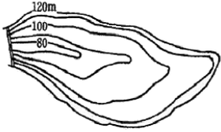
- 16500m3
- 25000m3
- 38000m3
- 48000m3
(정답률: 알수없음)
8. 수평곡선의 종류가 아닌 것은?
- 단곡선
- 복심곡선
- 반향곡선
- 2차 포물선
(정답률: 알수없음)
9. 터널 곡선부의 곡선측설법으로 가장 적절한 방법은?
- 현편거법
- 지거법
- 중앙종거법
- 편각법
(정답률: 알수없음)
10. 하천측량에 있어서 지형(평면)측량의 범위에 대한 설명으로 틀린 것은?
- 하천의 형상을 포함할 수 있는 크기로 한다.
- 유제부에서는 제내지까지를 범위로 한다.
- 우제부에서는 홍수가 영향을 주는 구역보다 약간 넓게 한다.
- 홍수방어가 목적인 하천공사에서는 하구에서부터 상류의 홍수피해가 미치는 지점까지를 범위로 한다.
(정답률: 알수없음)
11. 하천측량의 횡당측량에 대한 설명으로 옳지 않은 것은?
- 200m 마다 거리표를 기준으로 고저측량하는 것으로 좌안(左岸)을 기준으로 한다.
- 고저차의 관측은 지면이 평탄한 경우에는 5~10m 간격으로 측량한다.
- 경사변환점에서는 필히 높이를 관측한다.
- 횡단면도는 좌안을 우측으로 하여 제도한다.
(정답률: 알수없음)
12. 클로소이드 고선의 계산에서 곡선 반지름(R)=100m, 곡선장(L)=40m일 경우 접선각(τ)은 얼마인가?
- 10° 27‘33“
- 11° 27‘33“
- 12° 17‘33“
- 13° 27‘33“
(정답률: 알수없음)
13. 하천의 유속 분포가 다음 그림과 같을 때 3점법으로 평균유속을 구한 값은? (단, 하천의 표면유속은 1.0m/sec)
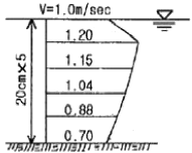
- 1.04m/sec
- 1.095m/sec
- 2.70m/sec
- 3.65m/sec
(정답률: 알수없음)
14. 도로의 단곡선을 설치할 때 곡선의 시점(B.C)의 위치를 구하기 위해서 필요한 요소가 아닌 것은?
- 외할(E)
- 교점(I.P)까지의 추가 거리
- 접선장(T.L)
- 반경(R)
(정답률: 알수없음)
15. 각과 위치에 의한 경관도의 정량화에서 시설물의 한 점을 시준할 때 시준선과 시설물 축선이 이루는 각 a는 크기에 따라 입체감에 변화를 주는데 다음 중 입체감있게 계획이 잘된 경관을 얻을 수 있는 범위로 가장 적합한 것은?
- 10＜a≤30°
- 30＜a≤50°
- 40＜a≤60°
- 50＜a≤70°
(정답률: 알수없음)
16. 경사 30°인 경사터널의 터널입구와 터널 내부의 두 점간고저차를 측정하는데 가장 신속하고 정확한 방법은?
- 경사계에 의해서 경사를 구하고 사거리를 측정하여 계산으로 구한다.
- 수은 기압계에 의하여 측정한다.
- 레벨로 직접 수준측량을 한다.
- 트랜싯으로 경사를 구하고, 사거리를 측정하여 계산으로 구한다.
(정답률: 알수없음)
17. 다음과 같은 500mm 하수관 공사에서 A점의 관저 계획고가 50.15cm이고 B점의 관저 계획고가 50.45m, 하수관의 경사가 1/250일 때 AB간의 수평거리는?
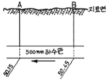
- 60m
- 75m
- 120m
- 150m
(정답률: 알수없음)
18. 지하시설물관측방법 중 지하를 단층 촬영하여 시설물의 위치를 판독하는 방법은?
- 전기관측법
- 지중레이더관측법
- 전자관측법
- 자장관측법
(정답률: 알수없음)
19. 토지분할에서 그림의 삼각형 ABC의 토지를 BC에 평행한 직선 DE로써 ADE:BCED=2:3의 비로 면적을 분할하는 경우 AD의 길이는?
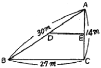
- 18.52m
- 18.97m
- 19.79m
- 23.24m
(정답률: 알수없음)
20. 하천의 삼각측량에서 주로 쓰이는 삼각망은?
- 단열삼각망
- 사변형망
- 유심다각망
- 격자망
(정답률: 알수없음)
2과목: 사진측량 및 원격탐사
21. 다른 하드웨어, 소프트웨어, 운영체제를 사용하는 응용 시스템에서 지리공간에 관한 정보를 공유하고자 만들어진 공간자료 교환표준을 뜻하는 용어는?
- SDTS
- SDI
- SDSS
- SIF
(정답률: 알수없음)
22. 어떤 지상물체의 분광반사율(Albedo)이 57%라고 가정할 때 임의의 전자기복사에너지 파장대에서 그 지상물체에서 반사되는 복사에너지가 15.3Wm-2Sr-1이었다면 이 지상물체로 입사되는 총 복사에너지는 얼마인가?
- 18.2 Wm2Sr-1
- 19.2 Wm2Sr-1
- 25.8 Wm2Sr-1
- 26.8 Wm2Sr-1
(정답률: 알수없음)
23. 격자구조와 비교할 때 벡터구조가 갖는 특징에 대한 설명으로 틀린 것은?
- 그래픽의 정확도가 높다.
- 위치와 속성의 검색, 갱신, 일반화가 가능하다.
- 자료구조가 단순하다.
- 현상적 자료구조를 잘 표현할 수 있고 축양되어 있다.
(정답률: 알수없음)
24. 사진의 크기가 같은 광각사진과 보통각 사진관의 비료 설명에서 ()안에 알맞은 말로 짝지어진 것은?
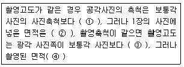
- ① 크다, ② 작다, ③ 낮다, ③ 같다
- ① 작다, ② 크다, ③ 높다, ③ 쿠
- ① 작다, ② 크다, ③ 낟다, ③ 같다
- ① 크다, ② 작다, ③ 낮다, ③ 작
(정답률: 알수없음)
25. 정밀도화기로 입체시하면서 사진 상의 지형지물을 도면화하고 표고를 측정하기 위해 사용하는 점을 무엇이라 하는가?
- 지표
- 부점
- 자침점
- 표정점
(정답률: 알수없음)
26. 항공사진 축척이 1/25000이고, 등고선 계수(C-Factor)가 525, 사진 초점거리가 21cm일 때, 등고선 간격은?
- 10m
- 7.5m
- 5m
- 2.5m
(정답률: 알수없음)
27. 편위수정(rectification)을 거친 사진을 집성한 사진지도로 등고선이 삽입되어 있지 않은 것은?
- 중심투영 사진지도
- 약조정 집성 사진지도
- 정사 사진지도
- 조정 집성 사진지도
(정답률: 알수없음)
28. 3차원(3D) GIS에 대한 설명으로 틀린 것은?
- 3차원 GIS는 3차원의 공간정보와 이를 이용한 공간분석작업을 수행하는 기능을 제공한다.
- 3차원 데이터는 지상 표면(Surface)과 지형ㆍ지물(feature) 모델로 구분될 수 있다.
- 3차원적인 데이터 표현과 분석 작업은 현실 세계에 대한 이해를 증진 시킨다.
- 3차원 GIS는 높이 값을 갖지 않는 X, Y와 시간의 속성값을 말한다.
(정답률: 알수없음)
29. 다중분광 스캐너 중 Whiskbroom scanner란 무엇을 말하는가?
- 위성경로를 따라 앞뒤로 회전하며 입체영상을 관측하는 스캐너
- 센서가 감지하는 분광범위가 가시광선에서 열적외선에 이르는 스캐너
- 회전하는 거울과 하나의 탐지기를 결합하여 지표면을 빗자루로 쓸 듯이 관측하는 스캐너
- 선형으로 배열된 CCO 소자를 이용하여 한 번에 한 라인 전체를 기록하는 스캐너
(정답률: 알수없음)
30. 항공사진측량에서 촬영속도 720km/h, 촬영고도 3000m, 초점거리 15cm, 허용 흔들림을 0.02mm로 하면 최장 노출시간은?
- 1/100 sec
- 1/125 sec
- 1/200 sec
- 1/500 sec
(정답률: 알수없음)
31. 27km×9km의 토지를 축척 1/30000으로 항공사진을 촬영할 때에 입체 모델 수는? (단, 23cm×23cm의 광각사진이며, 종중복 60%, 횡중복 30%)
- 20
- 30
- 40
- 60
(정답률: 알수없음)
32. 항공사진의 판독요소로 옳게 짝지어진 것은?
- 색조, 크기, 날씨
- 질감, 상호위치관계, 과고감
- 형상, 촬영고도, 음영
- 음영, 날씨, 과고감
(정답률: 알수없음)
33. 사진판독에서 과고감에 대한 설명으로 옳은 것은?
- 산지는 실제보다 더 낮게 보인다.
- 기복이 심한 산지에서 더 큰 영향을 보인다.
- 과고감은 초점거리나 중복도와는 무관하고 촬영고도에만 관련이 있다.
- 촬영고도가 높을수록 크게 나타난다.
(정답률: 알수없음)
34. 항공사진의 판독에 대한 설명으로 옳지 않은 것은?
- 철도는 보통 회색으로 찍히며, 규칙적인 곡선이나 직선부에 착안하여 판독한다.
- 고궁이나 사원은 경내의 수림이나 특징이 있는 지붕의 형에 의해 판독하는 경우가 많다.
- 학교는 운동장, 체육관, 풀장 등의 시설이 있는 경우에는 판독하기 쉽다.
- 활엽수림은 침엽수림보다 검게 찍히며 수관(樹冠)이 뾰족하기 때문에 구별하기 쉽다.
(정답률: 알수없음)
35. 다음 래스터자료는 표고를 표현한 것이다. 여기에서 (2.4) 지점, 즉 높이가 116인 지점에서 물이 흐르는 방향은 어느 쪽인가? (단, 격자의 크기는 50m×50m로 가정한다.)
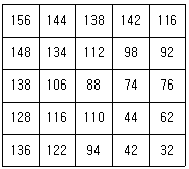
- 남쪽
- 북동쪽
- 서쪽
- 남서쪽
(정답률: 알수없음)
36. 절대표정(absolute orientation)과 관계없는 것은?
- 축척을 확정한다.
- 경사를 바로 잡는다.
- 종시차를 소거한다.
- 방위를 바로 잡는다.
(정답률: 알수없음)
37. GIS 데이터의 취득과 입력에 대한 설명으로 틀린 것은?
- GIS 프로젝트에서 데이터 구축에 많은 노력과 비용이 들며, 필요한 데이터의 구축 여부가 GIS의 응용분야에도 많은 영향을 미친다.
- 다양한 출처로부터 획득한 공간데이터는 일반적으로 디지타이저나 스캐너 등의 입력장비를 사용하여 벡터와 래스터 데이터로 구축할 수 있으며, 최근 원격탐사나 디지털 항공사진의 발전과 함께 자동으로 수치화된 자료를 얻을 수 있다.
- 표 형식의 자료나 리포트 형태의 자료들을 스캐너나 키보드를 통해 GIS 데이터로 입력되며, 센서스 자료를 디지털 형태로 제공하는 방향으로 변하고 있다.
- 야외 조사나 전문가가 제시한 아이디어의 경우는 직접적인 GIS 데이터 처리에 사용되지 못하므로 GIS 데이터로서 취급하지는 않는다.
(정답률: 37%)
38. 지형공간정보에서 데이터베이스의 개념적 구성에 의한 데이터베이스 모형 구조의 종류가 아닌 것은?
- 관망구조(network structure)
- 계층구조(hierarchical structure)
- 관계구조(relational structure)
- 속성구조(attribute structure)
(정답률: 알수없음)
39. 초점거리 150mm, 사진의 크기 23cm×23cm의 카메라를 사용하여 촬영고도 4500m에서 촬영된 평지에 대한 연직사진에서 서로 이웃하는 2장의 사진의 주점 간 거리를 1/25000 지형도상에서 측정하니 96.6mm인 경우 이 두 사진의 종중복도는?
- 55%
- 60%
- 65%
- 70%
(정답률: 알수없음)
40. 레이저를 이용하여 대상물의 3차원 좌표를 실시간으로 획득할 수 있는 측량 방법으로 삼림이나 수목지대에서도 투과율이 좋으며 자료 취득 및 처리과정이 완전히 수치방식으로 이루어질 수 있어 최근 고정밀 수치표고모델과 3차원 지리정보 제작에 많이 활용되고 있는 측량방법은?
- SAR(Synthetic Aperture Radar)
- RAR(Real Aperture Radar)
- EDM(Electro-magnetc Distance Meter)
- LiDAR(Light Detection And Ranging)
(정답률: 알수없음)
3과목: GIS 및 GPS
41. 어떤 측량장비의 망원경에 부착된 수준기 기포관의 감도를 결정하기 위해서 D=50m ᄄᅠᆯ어진 곳에 표척을 수직으로 세우고 수준기의 기포를 중앙에 맞춘 후 읽은 표척 눈금값이 1.00m이고, 망원경을 약간 기울여 기포관상의 눈금 n=7개 이동된 상태에서 측정한 표척의 눈금이 1.06m 이었다면 이 기포관의 감도는?
- 약 15“
- 약 20“
- 약 25“
- 약 35“
(정답률: 알수없음)
42. 다음 용어에 대한 설명 중 틀린 것은?
- 후시(後視)란 표고를 알고 있는 측점에 대한 시준을 말한다.
- 지반고는 시준고에서 전시를 뺀(-) 것이다.
- 지오이드면(geoid surface)이란 지구의 표면이 평균해면에 잠겨 있다고 가상한 면으로 회전타원체와 일치한다.
- 기준면이란 높이의 기준이 되는 점으로 표고 0(zero)이고 우리나라는 인천만의 평균해면을 취한다.
(정답률: 알수없음)
43. 축척을 모르고 있는 지도상의 A, B점이 축척 1:25000 지형도의 a, b점과 일치됨을 알았다. 이 때
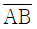
=27.5cm,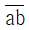
=5.5cm 라면 미지의 지도축척은 얼마인가?- 1:1000
- 1:5000
- 1:50000
- 1:125000
(정답률: 알수없음)
44. 토털스테이션의 구성요소와 관계가 없는 것은?
- 디지털 데오도라이트
- 알리데이드
- 광파기
- 마이크로 프로세서(컴퓨터)
(정답률: 알수없음)
45. 축척 1:500 지형도를 이용하여 축척 1:5000 지형도를 제작하려고 한다. 1:5000 지형도 상에 들어갈 1:500 지형도는 몇 매가 필요한가?
- 50매
- 100매
- 150매
- 200매
(정답률: 알수없음)
46. GPS의 측위 원리로 코드방식에 비해 정확도가 매우 높은 반면 측정시간이 다소 긴 방식은?
- 자외선 해석방식
- 저주파 해석방식
- 고주파 해석방식
- 반송파 해석방식
(정답률: 알수없음)
47. 폐합트래버스 측량에서 한 측점의 수평각 오차를 ±3“라 할 때 25개 측점에 대한 각의 오차는?
- ±15“
- ±25“
- ±50“
- ±75
(정답률: 알수없음)
48. 두 지점의 경사거리 100m에 대한 경사 보정이 1cm일 경우 두 지점 간의 높이 차는?
- 1.414m
- 2.414m
- 14.14m
- 24.14m
(정답률: 알수없음)
49. 삼각점 A에 기계를 세우고 삼각점 B가 시준되지 않으므로 점 P를 관측하여 T'=60°를 얻었다. 이 때 보정한 각 T는? (단, S=1km, 편심거리는 20cm, Φ=298° 45'이다.)
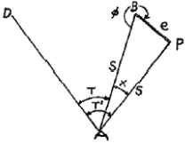
- 61° 59‘24“
- 60° 59‘24“
- 59° 59‘24“
- 58° 59‘24“
(정답률: 알수없음)
50. DOP(Dilution Of Precision)에 대한 설명으로 잘못된 것은?
- 위성관측에 좋은 조건에서는 나쁜 조건에 비해 DOP값이 작다.
- DOP는 시간과는 무관한 위치, 높이의 함수로 표현된다.
- DOP값은 수신기들의 위치와 수신기의 시계오차를 계산하여 구할 수 있다.
- DOP는 위성의 기하학적 배치상태가 정밀도에 어떻게 영향을 주는가를 추정할 수 있는 척도이다.
(정답률: 알수없음)
51. 삼각측량에 있어서 삼각망을 구성하는 형태로 가장 좋은 것은?
- 직각 삼각형
- 정 삼각형
- 2등변 삼각형
- 둔각 삼각형
(정답률: 알수없음)
52. 50cm의 줄자로 거리를 측정할 때 ±2mm의 부정 오차가 생긴다면 이 줄자로 100m로 관측할 때 생기는 부정오차는?
- ±4.0mm
- ±2.8mm
- ±2.0mm
- ±1.4mm
(정답률: 알수없음)
53. 등고선의 성질을 설명한 것으로 옳지 않은 것은?
- 등고선은 도면 안 또는 밖에서 반드시 폐합하며 도중에 소실되지 않는다.
- 낭떠러지와 동굴에서는 교차한다.
- 등고선은 경사가 급한 곳에서는 간격이 넓고, 경사가 완만한 곳에서는 간격이 좁다.
- 등고선 간의 최단거리의 방향은 그 지표면의 초대 경사의 방향을 가리킨다.
(정답률: 알수없음)
54. 다각측량의 종류 중에서 대규모 지역의 정확성이 요구되는 곳에 주로 이용되는 것은?
- 개방다각형
- 결합다각형
- 폐합다각형
- 연속다각형
(정답률: 알수없음)
55. GPS를 이용한 반송파 위상관측법에서 위성에서 보낸 파장과 지상에서 수신된 파장의 위상차만 관측하므로 전체 파장의 숫자는 정확히 알려져 있지 않은데 이를 무엇이라 하는가?
- Cycle Slip
- Selective Availability
- Ambiguity
- Pseudo Random Noise
(정답률: 알수없음)
56. 그림과 같이 하천을 횡단하여 수준 측량을 하였을 경우 D점의 지반고는? (단, 측점 B, C는 수면과 일치하며 A점의 지반고는 10m)
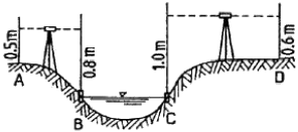
- 8.4m
- 9.7m
- 10.0m
- 10.1m
(정답률: 알수없음)
57. 두 점 A, B의 좌표가 각각A(-11328.58m, -4897.49m), B(-11616.10m, -5240.80m)일 때 AB점의 수평거리와 방위각은?
- 549.73m, 50° 32'31"
- 549.73m, 230° 32'31"
- 452.42m, 50° 32'31"
- 452.42m, 230° 32'31"
(정답률: 알수없음)
58. 지구의 곡률로 인하여 발생하는 오차는?
- 구차
- 기차
- 양차
- 우차
(정답률: 알수없음)
59. 다음 중 GPS의 위치 결정원리로 가장 타당한 것은?
- 관측점의 위치좌표가 (x, y, z)이므로 2개의 위성에서 전파를 수신하여 관측점의 위치를 구한다.
- 위성궤도에 대해 종방향으로는 정사투영에 의해, 횡방향으로는 중심투영에 의해 영상이 취득된 후 3차원 위치해석을 한다.
- 관측점 좌표(x, y, z)와 시간 t의 4차원 좌표의 결정방식으로 4개 이상의 위성에서 전파를 수신하여 관측점의 위치를 구한다.
- 한 위성으로부터 레이저광 펄스를 이용하여 우주공간과의 관계를 감안하여 지상 관측점의 위치(x, y, z)를 구한다.
(정답률: 알수없음)
60. 삼각망의 조정계산에서 만족시켜야할 기하학적 조건이 아닌 것은?
- 어느 한 측점 주위에 형성된 모든 각의 합은 반드시 360°이어야 한다.
- 다각형(삼각형 포함)의 내각의 합은 180° (n-2)이어야 한다. (여기서, n=변의 수)
- 삼각형의 한 변의 길이는 그 계산 경로에 관계없이 항상 일정하여야 한다.
- 삼각형의 편각의 합은 180°이다.
(정답률: 알수없음)
4과목: 측량학
61. 중앙지명위원회의 부위원장이 되는 자는?
- 국토해양부차관
- 행정안전부차관
- 국토지리정보원에서 지명업무를 담당하는 과장 또는 담당관
- 국토지리정보원장
(정답률: 알수없음)
62. 기본측량에 대한 설명으로 가장 적합한 것은?
- 기준점에 대한 측량성과를 얻기 위한 측량이다.
- 개개 공공측량의 측량성과에 대한 종합이다.
- 모든 측량의 기초가 되는 측량이다.
- 지적공부에 등록하기 위한 측량이다.
(정답률: 알수없음)
63. 기본측량 실시로 인한 손실보상은 누가 하는가?
- 측량작업기관
- 국토지리정보원장
- 측량계획기관
- 국토해양부장관
(정답률: 알수없음)
64. 다음 중 지도도식규칙의 적용 대상이 되지 못하는 것은?
- 기본측량 및 공공측량의 성과로서 지도를 간행하는 경우
- 기본측량 및 공공측량의 성과를 직접 이용하여 지도에 관한 간행물을 발간하는 경우
- 기본측량 및 공공측량의 성과를 간접으로 이용하여 지도에 관한 간행물을 발간하는 경우
- 기본측량 및 공공측량의 성과로서 군용지도를 조제하는 경우
(정답률: 알수없음)
65. 측량업 등록의 결격 사유에 해당되지 않는 경우는?
- 국가보안법을 위반하여 금고 이상의 혐의 집행유예를 선고 받고 그 집행유예기간 중에 있는 자
- 등록수첩을 대여하여 측량업 등록이 취소된 후 5년이 경과된 자
- 임원 중에 파산선고를 받고 복원되지 아니한 자가 있는 법인
- 금치산선고를 받은 자
(정답률: 알수없음)
66. 부정한 방법으로 측량업의 등록을 한 자에 대한 벌칙기준은?
- 200만원 이하의 과태료를 부과한다.
- 1년 이하의 징역 또는 1000만원 이하의 벌금에 처한다.
- 2년 이하의 징역 또는 2000만원 이하의 벌금에 처한다.
- 3년 이하의 징역 또는 3000만원 이하의 벌금에 처한다.
(정답률: 알수없음)
67. 기본측량의 실시 공고를 하여야 하는 자는?
- 국토지리정보원장
- 시ㆍ도지사
- 지방국토관리청장
- 시장, 군수
(정답률: 알수없음)
68. 측량심의회의 구성원의 기준으로 옳은 것은?
- 위원장 1인을 포함한 20인 이내의 위원
- 위원장 1인을 포함한 10인 이내의 위원
- 위원장 1인을 포함한 7인 이내의 위원
- 위원장 1인을 포함한 5인 이내의 위원
(정답률: 알수없음)
69. 다음 중 성능검사를 받아야 하는 측량기기에 속하지 않는 것은?
- GPS수신기
- 항공사진카메라
- 금속관로탐지기
- 토털스테이션
(정답률: 알수없음)
70. 다음 중 측량업의 종류에 해당하지 않는 것은?
- 지하시설물측량업
- 측지측량업
- 공간영상도화업
- 지도판매업
(정답률: 알수없음)
71. 측량업의 등록기준에서 금속관로 탐지기에 대한 장비기준으로 탐사깊이의 정확도는 탐사깊이 3m 기준으로 얼마 이하인가?
- ±1cm
- ±10cm
- ±30cm
- ±90cm
(정답률: 알수없음)
72. 측량업의 등록을 한 자는 등록사항 중 변경사항이 있는 때에는 변경등록을 하여야 한다. 다음 중 변경등록을 하여야 할 사항이 아닌 것은?
- 대표자의 소재지
- 법인의 대표자 또는 임원
- 상호
- 기술능력 및 장비
(정답률: 알수없음)
73. 공공측량으로 지정할 수 있는 일반측량이 아닌 것은?
- 측량노선의 길이가 10km 이상인 수준측량, 다각측량
- 국토지리정보원장이 발생하는 지도의 축척과 동일한 축척의 지도제작
- 지도제작업체가 국토지리정보원장이 발행하는 축척 이외의 지도를 발행하는 경우
- 인공위성 영상에 좌표를 부여하기 위한 2차원 또는 3차원의 좌표측량
(정답률: 알수없음)
74. 공공측량의 기준에 대한 설명으로 옳은 것은?
- 공공측량은 다른 공공측량과 일반측량성과를 기초로 실시해야 한다.
- 공공측량은 다른 공공측량성과만을 기초로 실시해야 한다.
- 공공측량은 일반측량의 측량성과만을 기초로 실시해야 한다.
- 공공측량은 기본측량 또는 다른 공공측량성과를 기초로 실시해야 한다.
(정답률: 알수없음)
75. 공공측량의 측량성과와 측량기록 사본의 교부를 받고자 하는 자는 어디에 신청하는가?
- 공공측량계획기관
- 공공측량작업기관
- 국토지리정보원장
- 시장, 군수
(정답률: 알수없음)
76. 1:5000 지형도 도식적용규정에서 실폭도로란 폭원이 몇 m이상의 도로를 말하는가?
- 10m
- 8m
- 6m
- 3m
(정답률: 알수없음)
77. 다음 중 임시설치표지에 해당되는 것은?
- 삼각점표석
- 표기
- 측표
- 자기점표석
(정답률: 알수없음)
78. 수치지형도는 몇 년에 1회 이상 주기적으로 자료보완이 이루어져야 하는가?
- 1년
- 2년
- 3년
- 4년
(정답률: 알수없음)
79. 측량업자가 폐업한 때에는 국토해양부장관 또는 시ㆍ도지사에게 그 사실을 며칠 이내에 신고하여야 하는가?
- 7일
- 20일
- 30일
- 60일
(정답률: 알수없음)
80. 1:25,000 및 1:50,000 지형도 도식전용규정에서 수애선의 표시방법으로 옳은 것은?
- 하천에서는 항공사진촬영 당시의 수위를 표시한다.
- 하천에서는 만조시의 실제모습을 표시한다.
- 바다에서는 항공사진촬영 당시의 수위를 표시한다.
- 바다에서는 만조시의 실제모습을 표시한다.
(정답률: 알수없음)